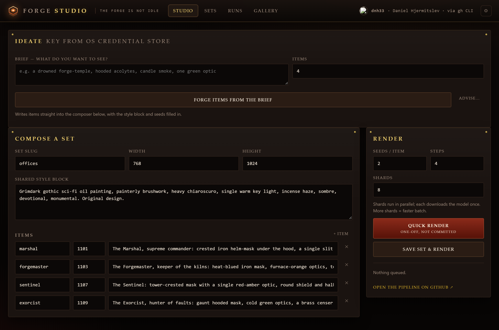
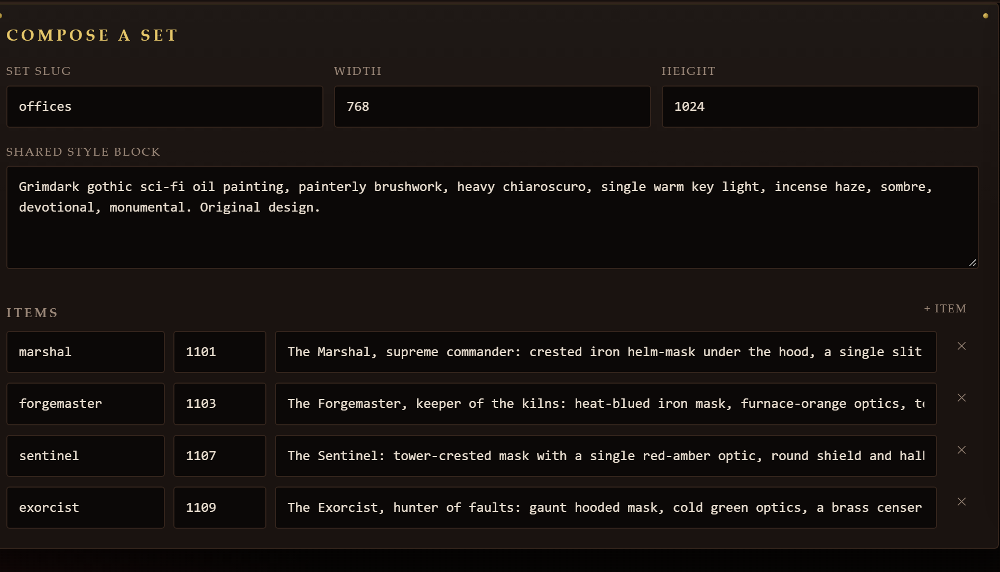
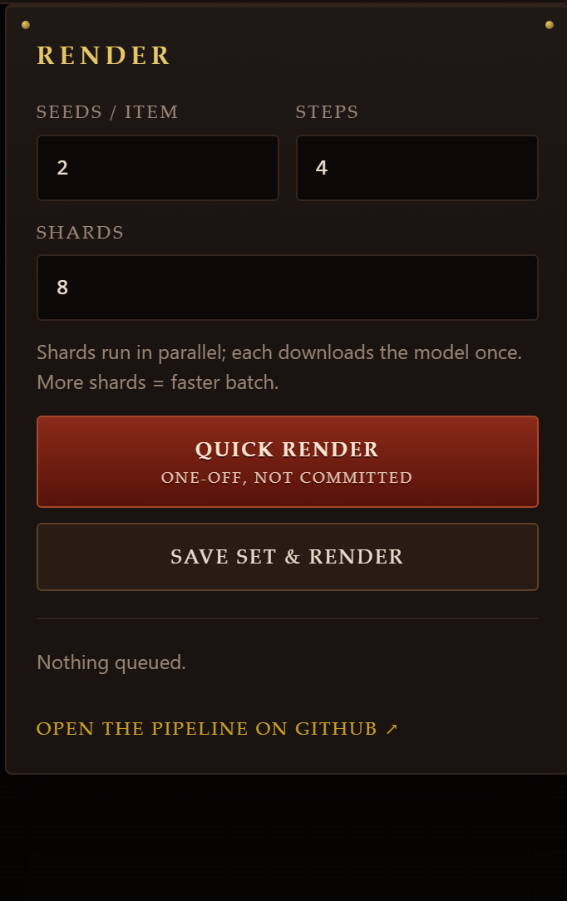

Make image sets without a GPU.
Compose a prompt set, dispatch it to a free public pipeline, and preview every render as it lands.

How a run works
-
Compose
Write a brief, or build the set by hand. One shared style block, one line per item, a fixed seed each.
-
Dispatch
Choose seeds per item, steps and shards, then start the run from the studio.
-
Render
Shards render in parallel on GitHub's free CPU runners. Each job downloads the model once.
-
Collect
Artifacts publish to the renders branch, each with a sidecar of the settings that made it. The studio previews them, and downloads on request.

A set is a folder of text
A set is not a pile of one-off prompts. It is a slug, a canvas, one style block for the whole run, and one line per item. The studio keeps it as a file in the repository.
- Style block
- One paragraph fixes the look for every item in the set.
- Seeds
- An item keeps its seed, so a re-render lands on the same image.
- One-off
- Quick Render runs a set without writing anything to the repository.
Why it is free
The compute is GitHub's. The weights are open. The studio is MIT.
- Runners
- GitHub-hosted runners cost nothing for public repositories. The pipeline trades wall-clock time for money.
- Model
- FLUX.1-schnell, quantised to a Q4 GGUF so a plain CPU can run it. Apache-2.0.
- Runtime
- MIT, the same as the studio. Nothing to license, nothing to leak.
- Shards
- Split a batch across parallel jobs. Each downloads the model once, so more shards means less waiting.
Your key stays yours
Ideation runs through OpenRouter. The key is handled one way, and only one way.
GitHub access reuses the gh CLI login you already have, so there is no extra token to store.
- environment
- Set OPENROUTER_API_KEY and the Rust core reads it directly. The window never sees it at all.
- credential store
- Or paste it once in Settings. It goes straight to the OS credential store: Windows Credential Manager, macOS Keychain, or Secret Service.
- never persisted
- Never written to a config file, never logged, never placed in a URL, never returned to the window. The field clears the moment it is saved.
Drive it from outside
The window is not the only way in. While it runs, the studio publishes a loopback control plane, and the repository ships an MCP server on top of it. An agent can read and write sets, dispatch a run, follow it, list the renders, download them, and use the ideation calls.
TOKEN=$(jq -r .token "$APPDATA/forge-studio/control.json") curl -s -H "Authorization: Bearer $TOKEN" http://127.0.0.1:7317/status
- 13endpoints, covering sets, dispatch, runs, outputs, renders, download, ideate and advise
- 12MCP tools, the same surface an agent calls directly
- 0secrets shared: the token is generated locally and published beside the port
Loopback only and token-gated, so nothing off the machine can reach it. Off with
FORGE_CONTROL=off. The full contract is in
docs/CONTROL.md.
Get the studio
Windows and macOS installers sit on the releases page. The only prerequisite is a logged-in GitHub CLI.
DownloadTo build it from source instead
git clone https://github.com/dnh33/forge-studio cd forge-studio/app npm install npm run tauri build
You do not need a toolchain to ship it: every tag builds the installers on GitHub's runners and attaches them to a draft release, verified before it goes public.
